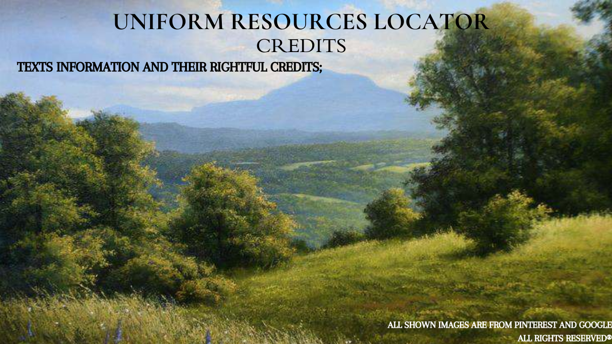

History Menu: https://philippinescities.com/zamboanga-city-zamboanga-del-sur/
All right reserved and copyright by Philippines Cities :
Developed by: Philippines Outsource Web Developer - Partners: Cebu Tours
Contact Information: https://www.facebook.com/philippinecities.
Beautiful Sceneries Menu: https://zamboangacity.gov.ph/citytourism/2023/10/23/long-weekend-
here-are-7-things-to-do-in-zamboanga-city/
Contact Information: Telephone : (63 62) 975-6341
Fax No : (Fax No.)
Email Address : tourism.zambo@gmail.com.
Cuisines Menu: https://outoftownblog.com/chavacano-cuisine-discovering-the-flavors-of-zamboanga/#google_vignette
Contact Information: Email Adress: melovillareal@gmail.com
Phone Number: 0918 985 5219